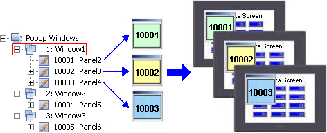
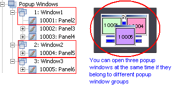
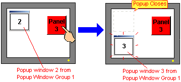
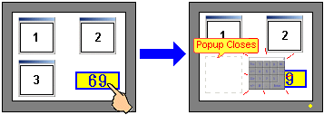
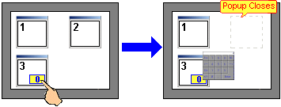

|
|
|
|
|
|
|
|

You can switch between panels in the popup window group.

You can globally set the size of the popup window panels in a popup window group. All popup window panels in the same popup window group are the same size.
There are two operation modes for popup windows.
Panel Only: The popup window closes when you change panels.
Persistent: The popup window remains open even when you change panels.
You can display up to three popup windows at the same time, as long as each popup window belongs to a different popup window group. You cannot display multiple popup windows from the same popup window group at the same time. Under some conditions, a popup window will close to allow another popup window or a popup keypad to open. See below for popup window opening and closing behavior.

Opening popup windows from the same popup window group.
In this situation, the first opened popup window closes to allow the second popup window from the same popup window group to open.

Opening more than three popup windows.
In this situation, if you open a fourth popup window, the fourth popup window does not open.
Opening three popup windows and a popup keypad.
In this situation, the last activated popup window closes to allow the popup keypad to display. For example, the popup windows in the image below are opened in the order 1, 2, 3, then the popup keypad is triggered. The third popup window, the last window activated, closes to allow the popup keypad to open.

Opening a popup keypad from a popup window when three popup windows are displaying.
In this situation, the second popup window activated closes to allow the popup keypad to display. For example, the popup windows in the image below are opened in the order 1, 2, 3. Then a popup keypad from the third popup window is triggered. The second popup window activated closes to allow the popup keypad to display.

This rule also applies for the following situation. Popup windows are opened in the order 1, 2, 3. Then popup window 1 is activated, and the popup keypad is triggered from popup window 3. It's now popup window 1 that closes to allow the popup keypad to open because it became the second popup window activated.